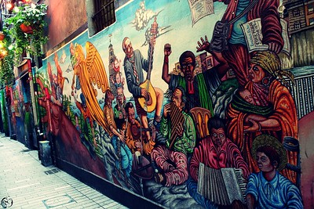

- Hotels
- Bars
- Restaurants
- Tourist Attractions
The Oval

Built by Beamish and Crawford whose historic brewery was situated across the road. Named after its unique oval shaped ceiling, the Oval bar is the spot for an intimate cosy drink. This pub is full of old world style and character which is its main attraction.
Mutton Lane
Mutton Lane is one of many alleyways that lead into the famed English Market. Sip away on your drink whilst appriacting the mural running the length of the lane entering the pub, which tell the stories of old cork tales. During the Irish civil war, This long, narrow bar was divided right down the middle between pro Treaty and anti Treaty forces during this time but the peace was held whilst in the establishment.
Tom Barrys

Located only a stones throw away from the Historic Elizabeth Fort and the picturesque Saint Fin Barre's Cathedral lies Tom Barry's, a traditional irish pub with a bohemian vibe. The beer garden out the back is the main attraction, with nice nic nacs and beautifully arranged flowers. Whilst you are right on the edge of the city, you could feel like you are sitting out the back of an old country pub. Their pizza is also regarded as one of the best in Cork.
The Hawthorn

Located beside the Lough, on the outskirts of the city. Arguably corks most scenic pubs, you can enjoy a tipple of your choice whilst looking at the vaious bird life the Lough has to offer.